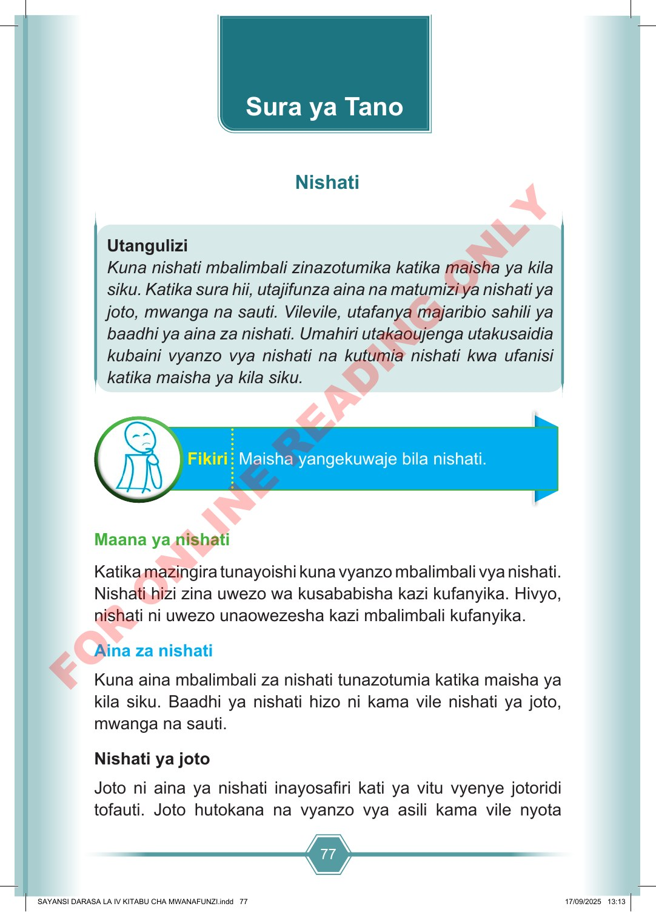

77 Utangulizi Kuna nishati mbalimbali zinazotumika katika maisha ya kila siku. Katika sura hii, utajifunza aina na matumizi ya nishati ya joto, mwanga na sauti. Vilevile, utafanya majaribio sahili ya baadhi ya aina za nishati. Umahiri utakaoujenga utakusaidia kubaini vyanzo vya nishati na kutumia nishati kwa ufanisi katika maisha ya kila siku. Maisha yangekuwaje bila nishati. Fikiri Maana ya nishati Katika mazingira tunayoishi kuna vyanzo mbalimbali vya nishati. Nishati hizi zina uwezo wa kusababisha kazi kufanyika. Hivyo, nishati ni uwezo unaowezesha kazi mbalimbali kufanyika. Aina za nishati Kuna aina mbalimbali za nishati tunazotumia katika maisha ya kila siku. Baadhi ya nishati hizo ni kama vile nishati ya joto, mwanga na sauti. Nishati ya joto Joto ni aina ya nishati inayosafiri kati ya vitu vyenye jotoridi tofauti. Joto hutokana na vyanzo vya asili kama vile nyota Sura ya Tano Nishati SAYANSI DARASA LA IV KITABU CHA MWANAFUNZI.indd 77 SAYANSI DARASA LA IV KITABU CHA MWANAFUNZI.indd 77 17/09/2025 13:13 17/09/2025 13:13 F O R O N L I N E R E A D I N G O N L Y